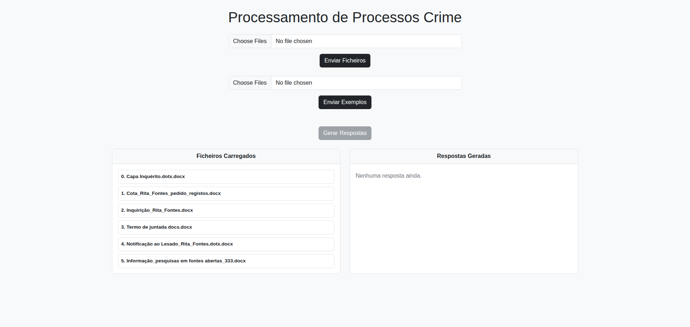
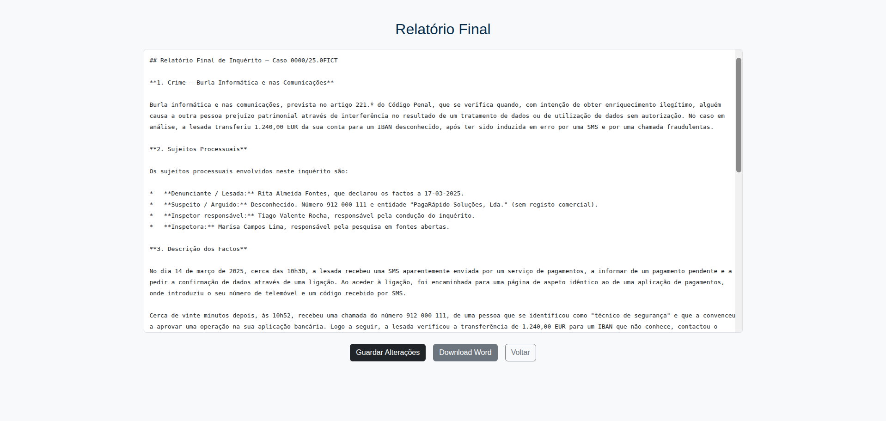

Criminal Case Summary System
Portuguese Criminal Investigation Police
Automated system powered by Artificial Intelligence and Large Language Models to support criminal investigation and streamline final report generation.
- 2025
- Developer
- Completed
About
Developed at ISEL in collaboration with the Portuguese Criminal Investigation Police, National Unit for Combating Cybercrime and Technological Crime, this project addresses the slowness and repetition associated with manually reading and interpreting complex criminal cases.
The system utilizes local LLM agents, Ollama / Gemma, to extract key facts, generate structured chronological summaries and serve as a secure tool to support legal decision-making.
Features
- Secure submission and validation of PDF and DOCX case files
- Automatic generation of structured reports and summaries by specialized agents
- Viewing, editing and exporting of the final report in Word, in .docx format
Sample Documents
One fictitious case, one document per specialized agent. All names, numbers and facts are invented (documents are in Portuguese). Swipe →

Generated Final Report
Output produced from the six documents above.
System Interface
From uploading case files to editing and exporting the final report.

